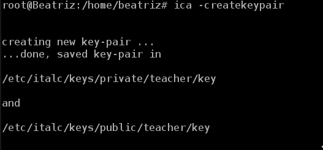
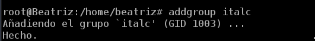
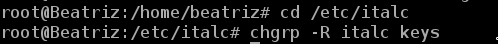
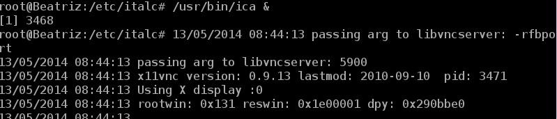
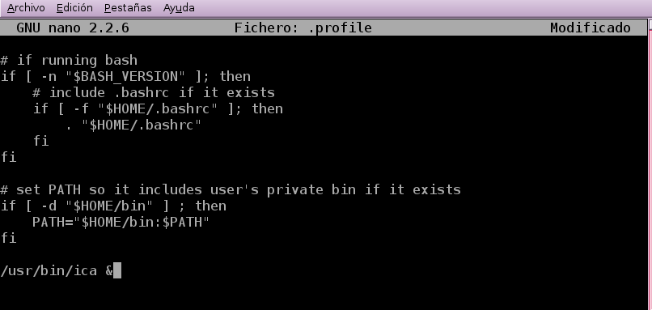
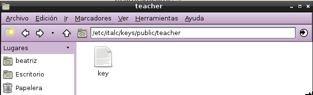
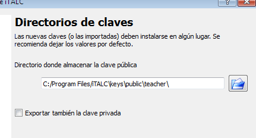
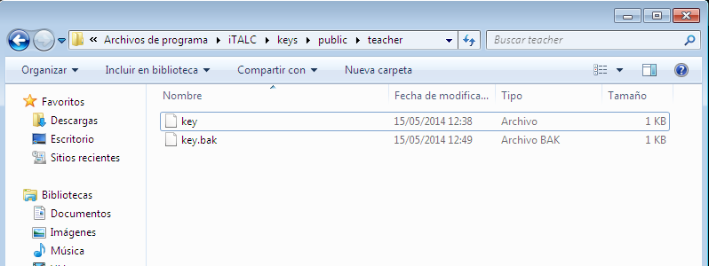

- Módulo: Fundamentos de Hardware
- Título del trabajo Control Remoto
- Componentes del grupo: Beatriz de Armas Salvador
- Curso Académico: 2013/2014
- Fecha de entrega: 2 de Junio de 2014
Instalamos iTalc Master (Maestro) en un equipo Debian7, el cual creará los ficheros:
Como las claves anteriores no existen, al final de la instalación del programa habrá que generarlas, para crear las claves de iTalc ejecutamos el comando: ica -createkeypair.
Creamos un grupo llamado italc, y añadimos el usuario "beatriz" al grupo:
Damos permisos al grupo italc, para tener acceso a las claves de italc usamos el comando: chgrp -R italc keys.
Iniciamos manualmente el servicio con el comando: /usr/bin/ica & .
Para que el servicio inicie automáticamente al iniciar sesión con el usuario "beatriz" habrá que modificar el fichero "/home/maul/.profile", añadiendo en último lugar: /usr/bin/ica & .
Cliente Windows
Instalamos la misma versión de Italc Master en el Windows, en el que tenemos que importar/copiar el fichero que contiene la clave pública. Lo hacemos mediante una memoria flash: Cogemos el fichero "key" de la ruta /etc/italc/keys/public/teacher.
Lo siguiente que hacemos es copiar dicho fichero en la máquina de windows, cuando la instalación de Italc nos lo pida. (INFO: Debemos cambiar el fichero "key" por "key.pub".
 Cliente GNU/Linux
En este punto de la práctica he clonado el mismo Debian7, he desinstalado el Italc Master e instalado el Italc Client. Al ser una MV clonada no hace falta ejecutar los pasos que indica porque se clonan del primer punto de la práctica. Lo único hay que hacer es iniciar el sistema con el comando: /usr/bin/ica & .
Ip's de las Máquinas Virtuales: